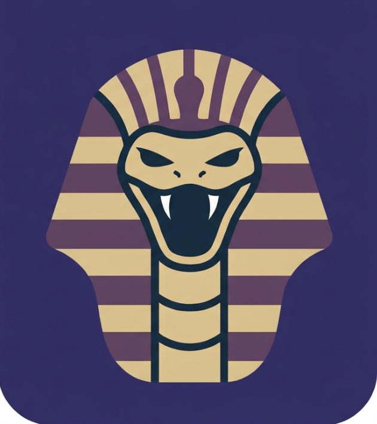

←
ANGEL
CORP
parent company
EN
ES

TYPHON
Security & Penetration Testing
Draft — in development
What TYPHON is
Flagship Concept
BIGFOOT VPN
Multi-hop VPN + Browser Extension
Concept — not built yet
What TYPHON Might Offer Later
Network Mapper
Report Builder
Phishing Simulator
Credential Audit
Scenario Builder
AI Findings Assistant
 ANGELCORP
ANGELCORP